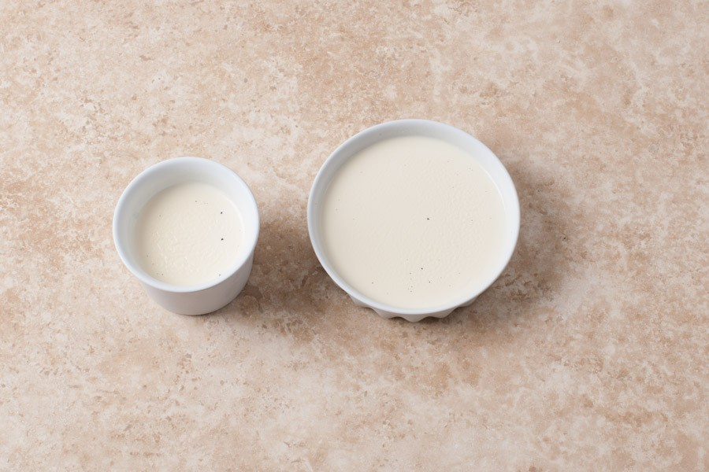

Панна Котта

Ингредиенты:
Желатин - 10 гр
Сливки 33% (ниже нельзя!) - 250 гр
Молоко 3% - 125 гр
Сахар - 60 гр
Ваниль - 1 стручок (можно заменить ванилью)
Сахар - 50 гр
Вода - 50 гр
Приготовление:
1. Замочить желатин, на 10 грамм желатина - 50 грамм воды.
2. В идеале использовать не ваниль, а ванильный стручок.
Разрезаете аккуратно стебель вдоль и счищаете семена ванили обратной стороной ножа с обеих половинок. Никакие эссенции, ванилины и даже экстракт здесь не помогут повторить вкус.
3. Смешиваем сливки, молоко и сахар, бросаем туда зерна стручка и стручок или ваниль, доводим до кипения, но не даем кипеть.
Под действием температуры сливки и молоко взяли в себя вкус и аромат ванили (от семян и стручка). Процесс называется ароматизацией.
4. Вливаем желатин и тщательно размешиваем. Взбалтывать нельзя, будут пузырьки, которые испортят структуру.
5. Разливаем в силиконовые формы или мелкие чашки через сито.
6. Даем массе остыть и ставим в холодильник, в морозилку на 10-12 часов. Перед подачей вытащить из холодильника на 30 минут.
Срок хранения в холодильнике - месяц.
7. Если все делалось правильно - при разрезе структура будет бархатной, а значит будет идеальный баланс вкуса.
Если нарушена технология (кипело, сильно мешали, много желатина), срез будет гладкий как у желе.